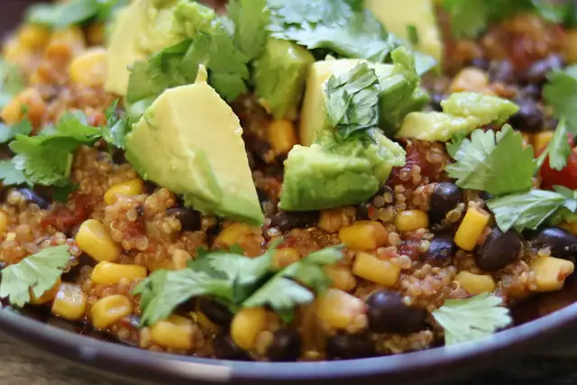

Lasagna

These fuss-free dinners can be made in one big pot or skillet, making clean-up a breeze.
They are super tasty recipes, as all the flavors mingle and cook together in one big dish.
They're hearty and filling too, so perfect for busy weeknight meals.
Here are some of our favorite one-pot dinners, ready in under an hour.
Ingredients
- 1½ tablespoons tomato paste
- ¼ teaspoon ground black pepper
- ½ teaspoon dried oregano
Steps
- In a medium bowl, combine the broth, tomato paste, ground black pepper, oregano, salt and garlic. Mix well and
set aside.
- Dredge the chicken in the bread crumbs, coating well. Heat the oil in a large skillet over medium high heat.
Sauté the chicken in the oil for 2 minutes per side, or until lightly browned.
- dd the reserved broth mixture and the mushrooms to the skillet and bring to a boil.
Then cover, reduce heat to low and simmer for 20 minutes.